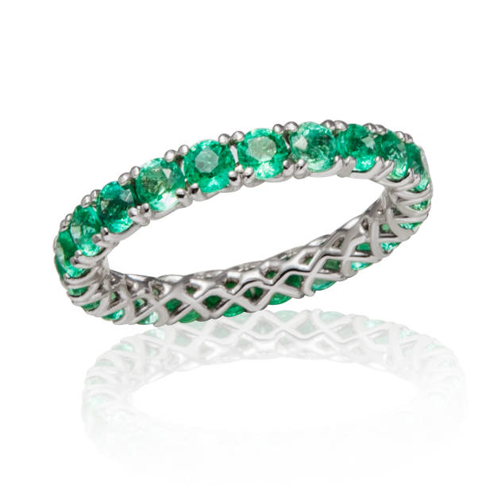
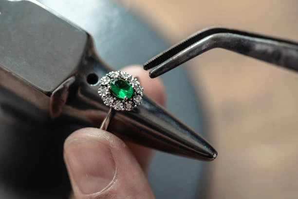
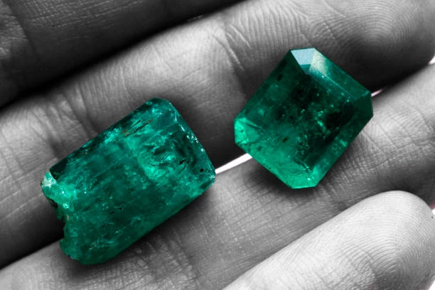
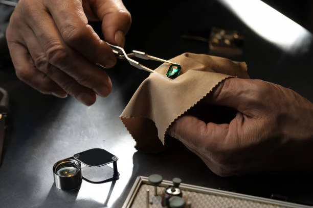
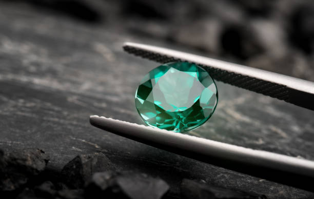
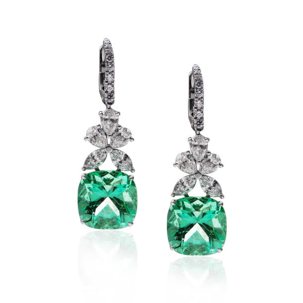
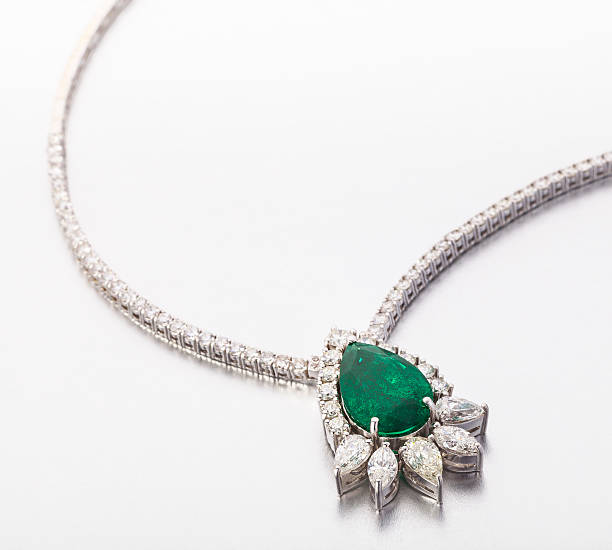

Emerald Rings
Discover our stunning collection of emerald rings, each featuring exceptional stones from Muzo.
View Collection
Welcome to Cumorah Jewelry, where we bring you the most exquisite emeralds from Muzo, Boyacá - the heart of Colombia's emerald region.

Every emerald comes with a certificate of origin from the mines of Muzo, Boyacá, guaranteeing its Colombian heritage.

Our emeralds are carefully selected for their superior color, clarity, and cut, representing the finest specimens from Colombia.

Each piece is meticulously crafted by skilled artisans, combining traditional techniques with modern design.

Discover our stunning collection of emerald rings, each featuring exceptional stones from Muzo.
View Collection
Explore our carefully curated selection of emerald pendants and necklaces.
View Collection
Browse our exquisite collection of emerald earrings, from studs to dramatic drops.
View CollectionExplore our collection of fine jewelry featuring the world's most sought-after emeralds.
View Collection